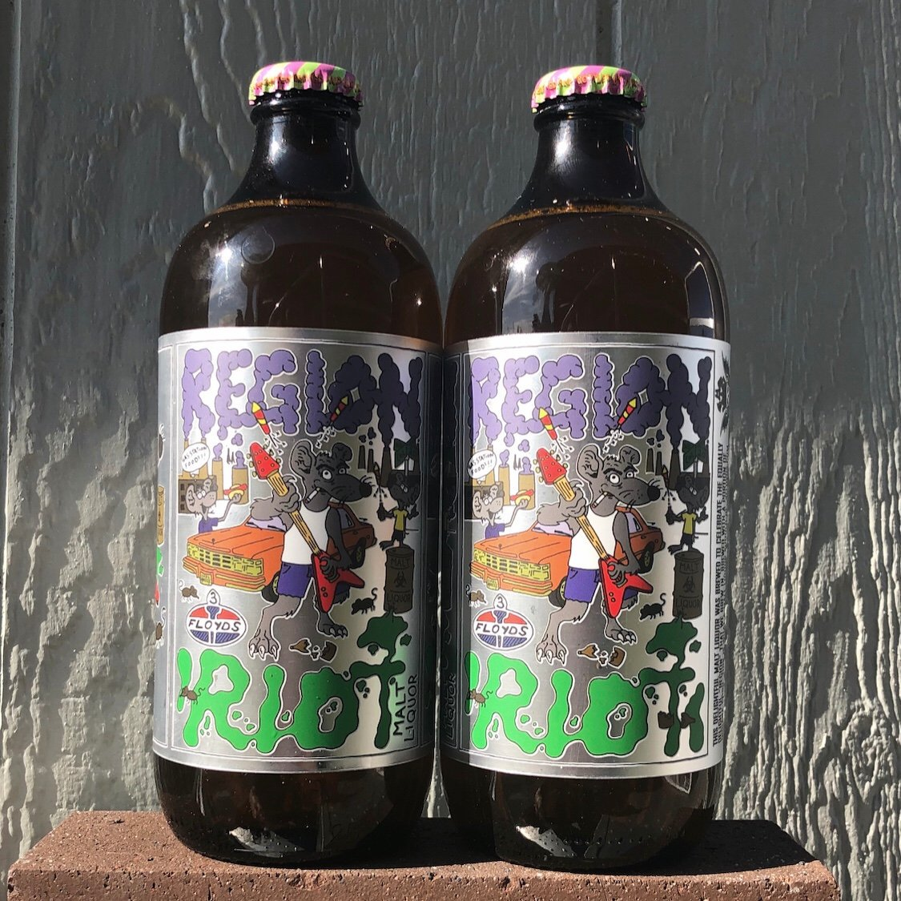

HOME
LAGER
Region Riot
3 Floyds Brewing Co.
This delightful malt liquor was brewed to celebrate the equally delightful “Region” that we brew in. Brewed with a portion of Indiana corn, this is what a malt liquor should be.
Located in Indiana, Three Floyds are strict adherents to the samurai code of the greman beer purity law. From our humble beginnings in 1996—armed with only a few hundred dollars, a five-barrel Frankenstein wok-burner-fired brew kettle, repurposed open Swiss cheese fermenters (Hammond Squares) and an old Canfield’s Cola tank—”It’s Not Normal” ales and lagers were born.
Check out their site HERE 